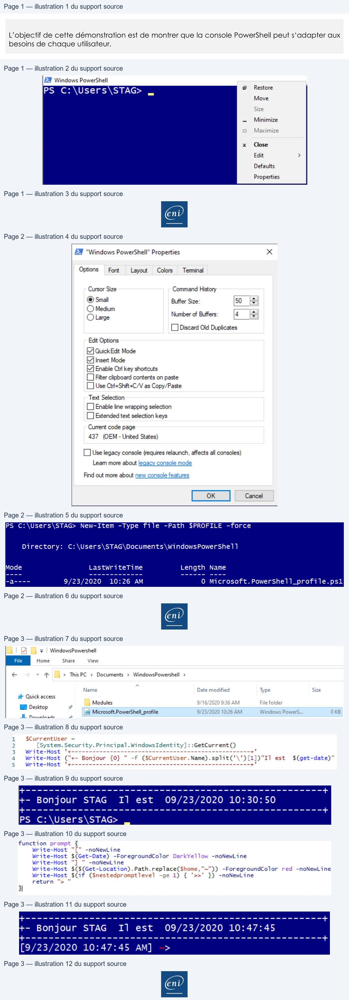

Transcription du document du Drive TSSR. La mise en forme est adaptée au Web ; les compléments IA du portail sont présentés séparément.
Initiation au Scripting avec PowerShell
Démonstration 08 du module 1
L’objectif de cette démonstration est de montrer que la console PowerShell peut s‘adapter aux
besoins de chaque utilisateur.
•
La personnalisation de la console PowerShell se fait en faisant un clic droit sur le bandeau de la
fenêtre.
•
Il est possible de modifier la police, la taille les couleurs de fond…
Page 1/3
© ENI – Tous droits réservés
ER Windows PowerShell
.
ag
Restore
PS C:\Users\STAG> _
Move
Size
=
Minimize
Maximize
x
Close
Edit
>
Defaults
Properties
Initiation au Scripting avec PowerShell
La personnalisation de la console peut se faire avec l’aide d’un profil qui est un script PowerShell.
Ce script sera exécuté à chaque lancement de la console.
Pour générer le fichier de profil, on utilise une commande PowerShell.
Le fichier est généré dans le dossier documents de l’utilisateur actuel.
Chaque utilisateur dispose de son propre profil.
Page 2/3
© ENI – Tous droits réservés
EN "Windows PowerShell" Properties
x
Options
Font
Layout
Colors
Teminal
Cursor Size
Command History
@ Small
Buffer Size:
50
©) Medium
|
=
QO Large
Numberof Buffers:
4
o
CJ Discard Old Duplicates
Edit Options
QuickEdit Mode
Insert Mode
Enable Cir key shortcuts
(J Fitter clipboard contents on paste
[] Use Cti+-ShifteC/V as Copy/Paste
Text Selection
(J Enable line wrapping selection
LD Extended text selection keys
Current code page
437 (OEM - United States)
(J Use legacy console (requires relaunch, affects all consoles)
Leam more about legacy console mode
Find out more about new console features
PS C:\Users\STAG> New-Item -Type file
-Path $PROFILE -force
Directory:
C:\Users\STAG\Documents\WindowsPowershe11
Mode
LastwriteTime
Length Name
-a----
9/23/2020
10:26 AM
0 Microsoft. PowerShell_profile.ps1
Initiation au Scripting avec PowerShell
Dans cet exemple on personnalise la console avec un bandeau d’accueil qui affiche le nom de
l’utilisateur actuel ainsi que l’heure est la date.
Il est également possible de modifier le Prompt.
Le résultat est un prompt personnalisé.
Page 3/3
© ENI – Tous droits réservés
|
> | WindowsPowershell
Home
Share
View
€
+
#
>
ThisPC
>
Documents
>
WindowsPowershell
>
Name
°
Date modified
Type
Size
wt Quick access
Modul
9/16/2020
9:36 AM
File folde
EM Desktop
ous
=
—_———————
-
-
1 Microsoft.PowerShell_profile
9/23/2020 10:26 AM
Windows Powers...
D KB
Pauniasde
1
$CurrentUser
=
2
(System. Security. Principal. WindowsIdentity]
: :GetCurrent()
3
Write-Host
"4----- 9-2
en nnn nen nnn
À
4
Write-Host
("+- Bonjour
{0}
"
-f
($CurrentUser.Name).split(’’)[1])"I1
est
S(get-date)"
5
Write-Host
°+---------------------------------------------------+'
ET
+- Bonjour STAG
Il
est
09/23/2020 10:30:50
een
=== -4+
PS
Cc: \Users\STAG>
function prompt
Ÿ
Write-Host
"["
-noNewLine
Write-Host
$(Get-Date)
-ForegroundColor DarkYellow
-noNewLine
Write-Host
"]
"
-noNewLine
Write-Host $($(Get-Location).
Path.replace($home,"~")) -ForegroundColor red -noNewLine
Write-Host
$(Cif
($nestedpromptlevel
-ge 1)
{
'>>"
}) -noNewLine
return
">"
HI
Poo eoet
+- Bonjour STAG
Il
est
09/23/2020 10:47:45
a
nnnnnnneteteEetet à
[9/23/2020 10:47:45 AM]
>
